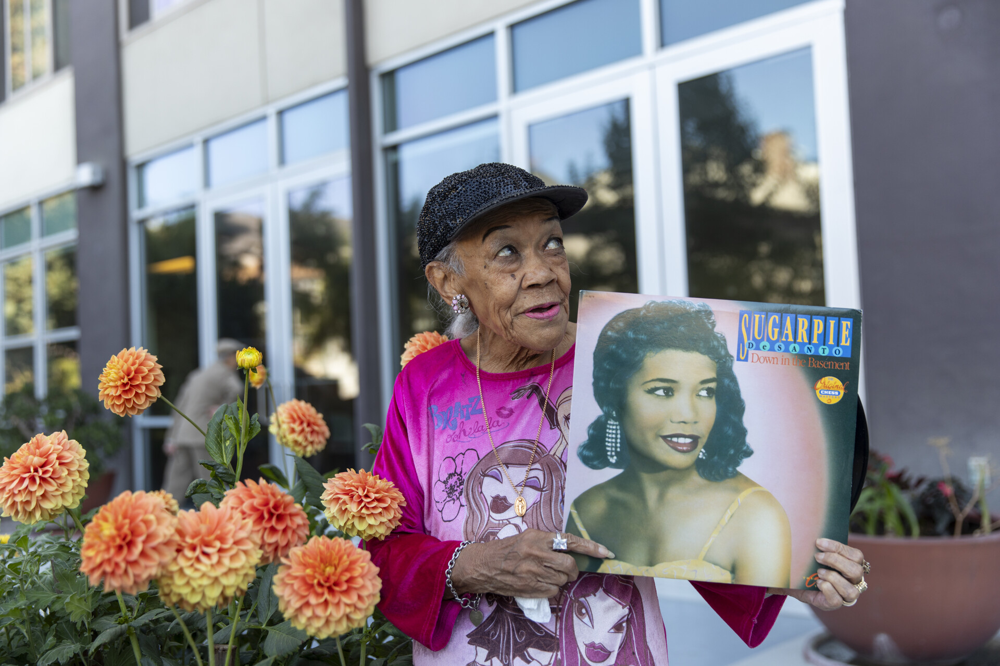

MUS 302 · What to Listen for in Music
Module 1: Orientation and Methodology · Listening Guide · Track 3 of 4
Track 3 Sugar Pie DeSanto, "I Don't Wanna Fuss" (1964)

Context
Two migrations into one San Francisco neighborhood
Sugar Pie DeSanto was born Umpeylia Marsema Balinton on October 16, 1935, in Brooklyn, New York. Her father, Ignacio Bindo Balinton, was a Filipino seaman from Manila who had arrived in San Francisco in 1919. Her mother, Alice Roosevelt Coates Balinton, was an African American concert pianist from Philadelphia. DeSanto was the fifth of ten children. Her family moved to San Francisco when she was four years old, settling in the , the multiethnic working-class neighborhood that was about to become the most important Black music scene west of the Mississippi.
Two migration stories met in the Balinton family. Ignacio was part of the to the West Coast that had grown after the United States and that accelerated under the legal status of which Filipinos held until 1934. Filipino men, mostly working as agricultural laborers, sailors, and service workers, arrived in significant numbers from the 1900s through the 1930s, often unable to bring families with them. Alice was part of an earlier wave of African Americans moving out of the South toward both the industrial North and the West, the broader we read about in the framing reading. Their daughter Sugar Pie was the meeting point of these two migrations, in a house full of music.
She was named for her Filipino grandmother. Umpeylia comes from the word , the bitter gourd that is a staple ingredient in Filipino cooking. She never met her grandmother and never traveled to the Philippines, but her father, who had emigrated from Manila, was, in her own account, a constant cultural presence in her life. He raised his children under strict Catholic rules, spoke with a thick Filipino accent, and held conservative views about what his daughters should be doing in public, including pulling her off a club stage by her ear when he found her singing. Years later, when DeSanto was working with the Bay Area producer and former NBA player Don Barksdale, he gave her the stage surname "DeSanto," reportedly as a nod to her Filipino heritage. The name she became famous under is, in this sense, half a gift from her father (the bitter-melon name he carried from Manila) and half a producer's deliberate Filipino reference (the surname). Both names stayed with her for the rest of her career.
The Fillmore District itself had been a multiethnic neighborhood since the late nineteenth century. Filipinos, Mexicans, Japanese, Russians, Jewish immigrants, and a small African American population had all lived there. World War II changed the neighborhood's demographic composition dramatically. After President Roosevelt signed in 1942 and Japanese American residents were forcibly removed and incarcerated, San Francisco's Black population grew nearly tenfold (from roughly 4,800 to 43,000) over the course of the war, as African American workers came to fill jobs in West Coast and other defense industries. Many of them moved into the housing the Japanese American community had been forced out of. By the late 1940s, the Fillmore had become known as the a name documenting both its emergence as a Black cultural center and the limits placed on where Black people could live in segregated San Francisco. As historians Elizabeth Pepin Silva and Lewis Watts have documented in their book Harlem of the West: The San Francisco Fillmore Jazz Era, the neighborhood at its peak had more than two dozen and R&B clubs in roughly twenty square blocks. Billie Holiday, Charlie Parker, Dizzy Gillespie, Dexter Gordon, Chet Baker, John Coltrane, and many others played its rooms. African American, Filipino American, Chinese American, and Italian American families lived next to each other. DeSanto grew up in this world.
Etta James, Johnny Otis, James Brown
DeSanto's closest childhood friend was a girl named Jamesetta Hawkins, who lived nearby and came over often. The two of them sang together on the Balinton family's back porch as small children. Jamesetta would later perform as Etta James, and the friendship between the two singers lasted nearly seventy years, until James's death in 2012. As DeSanto told KQED in 2023: "The kids would come to your house and just walk in and say, 'Hey, mom.' … There wasn't no locking no doors." Two of the most important Black women singers of mid-century American music came up in the same Fillmore living rooms.
DeSanto began sneaking out of her parents' house to sing in clubs at fifteen, putting baseballs in her bra to look older. Her father, who disapproved of his daughter's ambitions, once pulled her off a club stage by her ear in front of an audience. In 1954, at nineteen, she competed in a talent show at the Ellis Theater. Johnny Otis, the producer and bandleader who is sometimes called "the godfather of rhythm and blues," was in the audience. He took her to Los Angeles to record her first singles and gave her the stage name "Sugar Pie" because, as DeSanto later remembered Otis saying, "You're so little and cute, you could be Sugar Pie." (The DeSanto surname came later, given to her by Bay Area producer and DJ Don Barksdale.) She recorded for the Federal label, then for Veltone. Her first major hit, "I Want to Know," reached number four on the Billboard chart in 1960.
From 1959 to 1960, DeSanto toured as the opening act for the James Brown Revue, where she became known for her stage acrobatics, including back-flips. She was four feet eleven inches tall and full of force. She was, by her own account, the only woman in Brown's revue who never slept with him.
Chess Records and the 1964 sessions
In 1962, DeSanto moved to Chicago and signed with , the legendary and R&B label founded by the Polish-Jewish immigrant Chess brothers, Leonard and Phil. Chess in this period was the Black music industry's most important , the home of Muddy Waters, Howlin' Wolf, Chuck Berry, Etta James, and many others. DeSanto recorded for both Chess and its subsidiary . In 1964, the label released her best-known string of singles in quick succession: "Slip-In Mules (No High Heel Sneakers)," an to Tommy Tucker's hit "Hi-Heel Sneakers," which reached number ten on the R&B chart and crossed over to the ; "Soulful Dress," which reached number twelve on R&B; and "I Don't Wanna Fuss," the song you will hear, which was issued on Checker as the A-side of a single backed with "I Love You So Much." The composer credit on "I Don't Wanna Fuss" is Gerald Sims, who was also Chess's house guitarist and worked extensively with the label's artists. The Chess on this included drummer Maurice White, who would later co-found Earth, Wind & Fire.
Despite the song not making the Billboard R&B chart at the time, "I Don't Wanna Fuss" traveled. DeSanto performed it on the British television show in 1964 while wearing her hair in curlers and rolling on the floor. She was part of the 1964 European tour, alongside Howlin' Wolf, Sonny Boy Williamson, and Lightnin' Hopkins, where her stage acrobatics and uptempo R&B made her a sensation. Her records found a particularly enthusiastic audience among British fans, the working-class subculture of dancers in the north of England who collected mid-1960s American R&B records that had not been hits in the United States.
Fame
DeSanto continued recording, writing, and performing for another six decades. She wrote songs for other Chess artists in collaboration with Shena DeMell, working as a Chess (an unusual role for a woman in that era), including hits for Fontella Bass, Billy Stewart, and Minnie Riperton. She moved back to Oakland in the 1970s and continued to perform, often with her own bands, into her eighties. She was inducted into the Blues Hall of Fame in 2024. She died at home in Oakland on December 20, 2024, at the age of eighty-nine.
She is not as famous as Etta James, her childhood friend. She is not as famous as or Tina Turner, the two Black women singers most often named alongside James as the defining R&B voices of the 1960s. Some of this is musical: each of those singers had a different voice, a different range, a different relationship to , and (in Franklin's case) a different production team behind her at Atlantic Records. But the difference in fame between DeSanto and these other singers is not only musical. It also reflects a music industry that has, throughout its history, allocated attention and resources unevenly across artists who were doing comparable work. DeSanto recorded for an independent label that did not have Atlantic's promotional reach. She was Filipino and Black, which placed her outside the racial categories the industry was used to marketing. She was small and uptempo and acrobatic, which read as to some listeners in a way that masked the seriousness of her musicianship. Filmmaker Cheryl Fabio, who featured DeSanto in the documentary Evolutionary Blues, has emphasized that DeSanto's longevity rested on her songwriting and her sense of herself as "a writer and a poet and a lyricist," not on the marketing categories the industry tried to fit her into. The KQED obituary in December 2024 noted that DeSanto, like many Black women artists of her generation, "was part of a generation of influential Black artists who were not fairly compensated for their work." A separate appreciation in the Filipino American outlet Positively Filipino lamented that "not too many Filipinos even know who she is," and ongoing efforts by Filipino American filmmakers to document her story have framed her as a foundational, under-recognized Asian American R&B artist. When you listen to "I Don't Wanna Fuss," you are listening to a major American singer who never received the cultural attention her work warranted. Her under-recognition has been doubled: she has been undercounted by the African American R&B tradition where her training and artistic identity lived, and undercounted by the Asian American side of music history where her name is only now beginning to be recovered.
Things to listen for
"I Don't Wanna Fuss" is, by every available indication, a in the broadest sense, set inside the conventions of mid-1960s Chess R&B. We do not have published musicological analysis of this specific track to give you a definitive or , but we can describe what it does within the conventions of its genre, which is itself part of how this kind of music works: most Chess singles in 1964 were structured similarly enough that audiences could recognize the form on first hearing. The song runs 3:20. The on the session included drummer Maurice White (who would later co-found Earth, Wind & Fire), trombonist Louis Satterfield, trumpeter Charles Handy, and saxophonist Don Myrick, all jazz musicians who moonlighted as the label's studio band, which is part of why even the simplest Chess R&B records have unusually sophisticated horn writing. Producer Billy Davis and arranger Riley Hampton shaped the song's overall sound. DeSanto wrote much of her own catalog at Chess, though "I Don't Wanna Fuss" is credited to Gerald Sims, the label's house guitarist.
First, the timbre of DeSanto's voice. Listen for the contrast between two distinct tones she uses across the song. In the verses, her voice is almost conversational, sitting close to spoken English, with a slight smile in it. By the time she reaches the climactic phrases, the tone has shifted: rougher, more cutting, with audible (the same kind of textural roughness we heard in Cooke, but used differently). Cooke's grain emerges from gospel control; DeSanto's emerges from gospel intensity. Cooke's grain is restraint giving way to feeling; DeSanto's grain is feeling that was never really restrained in the first place. Cooke is asking you to bear witness; DeSanto is daring you to keep up. Notice also that her voice sits very forward in the mix, with little reverb or sweetening. The Chess production aesthetic in 1964 valued a dry, present vocal, the singer right next to the listener's ear, with the band slightly behind her. This is a different sound from Cooke's lush orchestral envelope or Cruz's full-bodied stadium projection. DeSanto's voice is in the room with you.
Second, the texture. Compared to the Cooke recording's eleven violins, French horn, and , or the Cruz recording's full ensemble, DeSanto's record is lean. A small Chess house band, perhaps six or seven musicians: drums (Maurice White), bass, electric guitar, piano, plus the horn section playing punctuating figures. No strings. No backing vocals. The arrangement leaves the singer in the foreground and the band in disciplined support. Pay attention to how the (drums, bass, guitar, piano) lays down a steady pocket without ever rushing to fill empty space. The horns enter selectively, with short stabbing figures between vocal phrases (often called in R&B production), responding to her rather than competing with her. This is texture that supports the song's argument: this is one woman speaking her mind, with a band backing her up, not an orchestra wrapping her in respectability. The leanness is a choice. It is also typical of the Chess sound at the time, which preferred smaller, tighter ensembles over the orchestral productions favored by competing labels like Atlantic or .
Third, the form: the 12-bar blues and what it does. Mid-1960s Chess R&B was built largely on the 12-bar blues structure, one of the most influential musical forms in American history. It works like this: each "verse" of the song is twelve (units of four beats each) long, organized into three four-measure phrases. The chords follow a specific pattern. The first four measures stay on the (the I chord, the home key). The next two measures move to the IV chord (the , four scale steps up from the tonic). The next two return to the I chord. The final four measures move to the V chord (the , five scale steps up), then back to IV, then back to I, with a closing turnaround that prepares the next 12-bar cycle. The whole pattern repeats throughout the song. Once you can hear the 12-bar pattern, you can hear it in thousands of other songs: most blues, much early rock and roll, much country (Hank Williams's catalog includes many 12-bar songs), much jazz, much R&B. The methodology reading calls "I Don't Wanna Fuss" a (A-B-A-B) shape, where the same line ("I don't wanna fuss") returns each chorus while the verses develop new material. That is one accurate description. Another is to listen for the 12-bar blues structure underneath: the harmonic shape that the singer's verse-chorus alternation rides on top of. Both descriptions are doing real analytical work. Where the verse-chorus frame asks "what does the singer do?", the 12-bar blues frame asks "what does the band do?" Try to hear both at once.
Fourth, the gestures, especially the shout. Listen for the moment, somewhere in the song, when DeSanto stops singing a line and shouts it. The shift from singing pitch to spoken-or-shouted pitch is itself a gesture: the song is no longer polite, the argument is no longer a song. Think of it as analogous to Cooke's voice cracking on "I'm afraid to die," but used differently: where Cooke's break lets vulnerability through, DeSanto's shout puts the argument on the table. Notice also how the band responds: the horns punctuate her shouts with answering figures, picking up the conversation. This is at the level of voice-and-band, the same principle that organizes salsa and gospel preaching, here compressed into the tight three-minute frame of a Chess single. Notice also DeSanto's rhythmic phrasing: she does not stay on the beat. She pushes some lines, pulls back others, lets phrases lag and then catches up, in the same family of techniques as Cooke's but with a sharper, more conversational edge. It is the rhythmic feel of a person actually arguing with someone, not a singer performing an argument.
Reflective question
Sugar Pie DeSanto is not as famous as Aretha Franklin or Tina Turner or even Etta James. Listen to this track and ask yourself why. What in the music is doing the same work as those more famous singers? What might be different? Whose songs get remembered, and whose do not, and why? Consider both the musical answers (what the song does or does not do) and the structural ones (the music industry, the marketing categories, the racial and ethnic and gender expectations of the era).
Sources for this section
Pepin Silva, Elizabeth, and Lewis Watts. Harlem of the West: The San Francisco Fillmore Jazz Era. Heyday Books, 2020 (revised edition). The standard reference on the Fillmore District as a Black music scene, with substantial oral history from DeSanto herself.
Yamada, Juliana. "Sugar Pie DeSanto, the 87-Year-Old Firecracker of R&B, Plots Her Comeback." KQED, September 2023. Long-form profile from KQED's "8 Over 80" series, with extensive direct quotation from DeSanto.
KQED. "Sugar Pie DeSanto Dies at 89." Obituary feature, December 22, 2024. Includes commentary from filmmaker Cheryl Fabio and DeSanto's late manager James Moore.
Hildebrand, Lee. Stars of Soul and Rhythm and Blues. Featured interview material on DeSanto, accessed via Blues Blast Magazine.
Patrick, Mick. Sleeve notes to Go Go Power: The Complete Chess Singles 1961–1966 (Kent Records, 2009). Detailed discographical and session information.
Blues Foundation. Sugar Pie DeSanto Hall of Fame induction notes (2024).
BlackPast.org. "Fillmore District, San Francisco," entry by April L. Harris.
FoundSF. "Harlem of the West." Useful on the redevelopment that destroyed the neighborhood's music scene starting in the 1960s.
Fabio, Cheryl. Evolutionary Blues: West Oakland's Music Legacy (documentary, 2017). Features DeSanto extensively.
Positively Filipino. "The Untold Story of Sugar Pie DeSanto." Filipino American magazine feature, December 2024. Author byline to verify before publishing. Includes material on the etymology of DeSanto's birth name and her father's role in her life.
AsAmNews. "Op-ed: Remembering Fil-Am singer Sugar Pie DeSanto." December 25, 2024. Author byline to verify before publishing. Frames DeSanto as a foundational mixed-race Asian American R&B artist.
NPR. "Sugar Pie DeSanto: After 50 Years, 'Go Going' Strong." Fresh Air archive, July 29, 2010. Includes DeSanto's own description of her father.